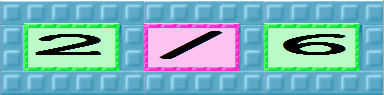

What this is good for:
In the Infinity Cardinality Activity 4 where you make all the fractions between 0 and 1 there is the problem that some fractions are the same. E.g. 1/3, 2/6, 3/9, etc. This tool removes duplicates from a sequence.
How to use this:
The bird in the Input box should be given a box that should be converted to a fraction if it is new. The box for 2/6 is:

Since this is the same as 1/3 it will not pass through. But 2/5 will pass through and end up on the Output nest.
How this works:
The first robot, Test Denominator, adds 3 new holes to the box so the other two robots can test if the number should be ignored and given to the bird. It is based upon the idea that when you divide 2 by 6 you get 1/3 whose denominator is 3 which is different from 6. But when you divide 2 by 5 you get 2/5 whose denominator is 5 which is the same as 5 so this number is already in a simple form and should be given to the bird.
What more can be done:
I can't think of any improvements.
Click on one of the following to bring this tool into ToonTalk.
This version produces boxes representing fractions (it was programmed by the students at the Cherwell School in Oxford, England):
This version produces ToonTalk number pads for fractions: